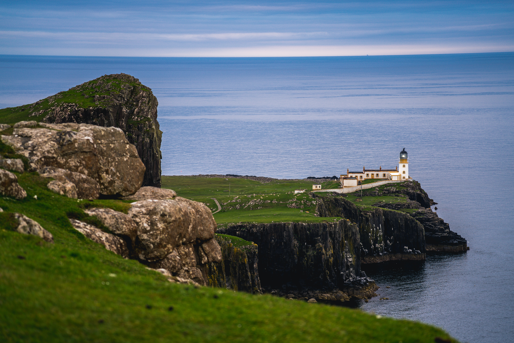

La île Sinistre is set on a fictional island off the coast of France. Join Dr. Crowbar and the rest of his French class in a journey of danger, survival, conspiracy, and action.
Try to find all the easter eggs!For the "best" experience, please enable audio.